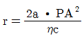
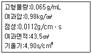
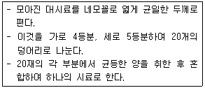
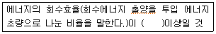

폐기물처리산업기사 (2020-06-06 기출문제)
1과목: 폐기물개론
1. 직경이 3.5m인 트롬멜 스크린의 최적속도(rpm)는?
- 25
- 20
- 15
- 10
(정답률: 50%)

2. 소각로 설계에 사용되는 발열량은?
- 저위발열량
- 고위발열량
- 총발열량
- 단열열량계로 측정한 열량
(정답률: 91%)
3. 비가연성 성분이 90wt%이고 밀도가 900kg/m3인 쓰레기 20m3에 함유된 가연성 물질의 중량(kg)은?
- 1600
- 1700
- 1800
- 1900
(정답률: 74%)
4. 폐기물 중 철금속(Fe)/비철금속(Al, Cu)/유리병의 3종류를 각각 분리할 수 있는 방법으로 가장 적절한 것은?
- 자력선별법
- 정전기선별법
- 와전류선별법
- 풍력선별법
(정답률: 88%)
5. 쓰레기 발생량을 조사하는 방법이 아닌 것은?
- 적재차량 계수분석법
- 직접계근법
- 경향법
- 물질수지법
(정답률: 89%)
6. 폐기물의 효과적인 수거를 위한 수거노선을 결정할 떄, 유의할 사항과 가장 거리가 먼 것은?
- 기존 정책이나 규정을 참조한다.
- 가능한 한 시계방향으로 수거노선을 정한다.
- U자형 회전은 가능한 피하도록 한다.
- 적은 양의 쓰레기가 발생하는 곳부터 먼저 수거한다.
(정답률: 94%)
7. pH 8과 pH 10인 폐수를 동량의 부피로 혼합하였을 경우 이 용액의 pH는?
- 8.3
- 9.0
- 9.7
- 10.0
(정답률: 58%)
8. 적환장 설치에 따른 효과로 가장 거리가 먼 것은?
- 수거효율 향상
- 비용 절감
- 매립장 작업효율 저하
- 효과적인 인원배치계획이 가능
(정답률: 87%)
9. 폐기물에 관한 설명으로 틀린 것은?
- 액상폐기물의 수분 함량은 90% 초과한다.
- 반고상폐기물의 고형물 함량은 5% 이상 15% 미만이다.
- 고상폐기물의 수분 함량은 85% 미만이다.
- 액상폐기물을 직매립할 수는 없다.
(정답률: 83%)
10. 도시폐기물의 해석에서 Rosin-Rammler Model에 대한 설명으로 가장 거리가 먼 것은? (단, Y=1-exp[-(x/xo)n]기준)
- 도시폐기물의 입자크기분포에 대한 수식적 모델이다.
- Y는 크기가 x 보다 큰 입자의 총 누적무게분율이다.
- xo는 특성입자 크기를 의미한다.
- 특성입자크기는 입자의 무게기준으로 63.2%가 통과할 수 있는 체의 눈의 크기이다.
(정답률: 77%)
11. 폐기물에 혼합되어 있는 철금속성분의 폐기물을 분류하기 위하여 사용할 수 있는 가장 적합한 방법은?
- 자력선별
- 광학분류기
- 스크린법
- Air Separation
(정답률: 92%)
12. 폐기물의 소각처리에 중요한 연료특성인 발열량에 대한 설명으로 옳은 것은?
- 저위발열량은 연소에 의해 생성된 수분이 응축하였을 경우의 발열량이다.
- 고위발열량은 소각로의 설계기준이 되는 발열량으로 진발열량이라고도 한다.
- 단열열량계로 측정한 발열량은 고위발열량이다.
- 발열량은 플라스틱의 혼입이 많으면 증가하지만 계절적 변동과 상관없이 일정하다.
(정답률: 63%)
13. 퇴비화에 관한 설명 중 맞는 것은?
- 퇴비화과정 중 병원균은 거의 사멸되지 않는다.
- 함수율이 높을 경우 침출수가 발생된다.
- 호기성보다 혐기성 방법이 퇴비화에 소요되는 시간이 짧다.
- C/N비가 클수록 퇴비화가 잘 이루어진다.
(정답률: 52%)
14. 트롬멜 스크린에 대한 설명으로 옳지 않은 것은?
- 원통의 최적 회전속도 = 원통의 임계 회전속도 × 1.45
- 원통의 경사도가 크면 부하율이 커진다.
- 스크린 중에서 선별효율이 좋고 유지관리상의 문제가 적다.
- 원통의 경사도가 크면 효율이 저하된다.
(정답률: 84%)
15. 폐기물 성상분석의 절차 중 가장 먼저 시행하는 것은?
- 분류
- 물리적 조성분석
- 화학적 조성분석
- 발열량 측정
(정답률: 86%)
16. 원통의 체면을 수평보다 조금 경사진 축의 둘레에서 회전시키면서 체로 나누는 방법은?
- Cascade 선별
- Trommel 선별
- Electrostatic 선별
- Eddy-Current 선별
(정답률: 91%)
17. 모든 인자를 시간에 따른 함수로 나타낸 후, 각 인자간의 상호관계를 수식화하여 쓰레기 발생량을 예측하는 방법은?
- 동적모사모델
- 다중회귀모델
- 시간인자모델
- 다중인자모델
(정답률: 87%)
18. 쓰레기 관리체계에서 가장 비용이 많이 드는 과정은?
- 수거 및 운반
- 처리
- 저장
- 재활용
(정답률: 90%)
19. 함수율 40%인 3kg의 쓰레기를 건조시켜 함수율 15%로 하였을 때 건조 쓰레기의 무게(kg)는? (단, 비중 = 1.0 기준)
- 1.12
- 1.41
- 2.12
- 2.41
(정답률: 67%)
20. 폐기물의 파쇄 시 에너지 소모량이 크기 때문에 에너지 소모량을 예측하기 위한 여러 가지 방법들이 제안된다. 이들 가운데 고운 파쇄(2차 파쇄)에 가장 적합한 예측모형은?
- Rosin-Rammler Model
- Kick의 법칙
- Rittinger의 법칙
- Bond의 법칙
(정답률: 84%)
2과목: 폐기물처리기술
21. 응집제로 가장 부적합한 것은?
- 황산나트륨(Na2SO4ㆍ10H2O)
- 황산알루미늄(Al2(SO4)3ㆍ18H2O)
- 염화제이철(FeCI3ㆍ6H2O)
- 폴리염화알루미늄(PAC)
(정답률: 77%)
22. 아래와 같이 운전되는 batch type 소각로의 쓰레기 kg 당 전체발열량(저위발열량 + 공기예열에 소모된 열량, kcal/kg)은? (단, 과잉공기비 = 2.4, 이론공기량 = 1.8Sm3/kg쓰레기, 공기예열온도 = 180℃, 공기정압비열=0.32kcal/Sm3ㆍ℃, 쓰레기 저위발열량=2000kcal/kg, 공기온도=0℃)
- 약 2⑤0
- 약 2250
- 약 2450
- 약 2650
(정답률: 48%)
23. 폐기물 처리방법 중 열적 처리방법이 아닌 것은?
- 탈수방법
- 소각방법
- 열분해방법
- 건류가스화방법
(정답률: 85%)
24. 쓰레기의 혐기성 소화에 관여하는 미생물은?
- 산(酸)생성 박테리아
- 질산화 박테리아
- 대장균군
- 질소고정 박테리아
(정답률: 72%)
25. 시멘트고형화 처리와 관계없는 반응은?
- 수화반응
- 포졸란반응
- 탄산화반응
- 질산화반응
(정답률: 69%)
26. 도시의 오염된 지하수의 Darcy 속도(유출속도)가 0.1m/day이고, 유효 공극률이 0.4일 때, 오염원으로부터 600m 떨어진 지점에 도달하는데 걸리는 시간(년)은? (단, 유출속도: 단위시간에 흙의 전체 단면적을 통하여 흐르는 물의 속도)
- 약 3.3
- 약 4.4
- 약 5.5
- 약 6.6
(정답률: 49%)
27. 석회를 주입하여 슬러지 중의 병원성 미생물을 사멸시키기 위한 pH 유지 농도로 적절한 것은? (단, 온도는 15℃, 4시간 지속시간 기준)
- pH 5 이상
- pH 7 이상
- pH 9 이상
- pH 11 이상
(정답률: 55%)
28. 가연성 쓰레기의 연료화 장점에 해당하지 않은 것은?
- 저장이 용이하다.
- 수송이 용이하다.
- 일반로에서 연소가 가능하다.
- 쓰레기로부터 폐열을 회수할 수 있다.
(정답률: 59%)
29. 매립방법에 따른 매립이 아닌 것은?
- 단순매립
- 내륙매립
- 위생매립
- 안전매립
(정답률: 69%)
30. 부피가 500m3인 소화조에 고형물농도 10%, 고형물내 VS 함유도 70%인 슬러지가 50m3/d로 유입될 때, 소화조에 주입되는 TS, VS 부하는 각각 몇 kg/m3ㆍd인가? (단, 슬러지의 비중은 1.0으로 가정한다.)
- TS:5.0, VS:0.35
- TS:5.0, VS:0.70
- TS:10.0, VS:3.50
- TS:10.0, VS:7.0
(정답률: 53%)
31. 펠레트형(Pellet type) RDF의 주된 특성이 아닌 것은?
- 형태 및 크기는 각각 직경이 10~20mm이고 길이가 30~50mm이다.
- 발열량이 3300~4000kcal/kg으로 fluff형보다 다소 높다.
- 수분함량이 4%이하로 반영구적으로 보관이 가능하다.
- 회분함량이 12~25%로 powder형보다 다소 높다.
(정답률: 65%)
32. 도시폐기물을 위생적인 매립방법으로 매립하였을 경우 매립초기에 가장 많이 발생하는 가스의 종류는?
- NH3
- CO2
- H2S
- CH4
(정답률: 74%)
33. 매립지 일일 복토재 기능으로 잘못된 설명은?
- 복토층 구조
- 최종 투수성
- 매립사면 안정화
- 식물 성장층 제공
(정답률: 63%)
34. 바이오리액터형 매립공법의 장점과 거리가 먼 것은?
- 매립지의 수명연장이 가능하다.
- 침출수 처리비용의 절감이 가능하다.
- 악취 발생이 감소한다.
- 매립가스 회수율이 증가한다.
(정답률: 61%)
35. 전기집진장치의 장점이 아닌 것은?
- 집진효율이 높다.
- 설치 시 소요 부지면적이 적다.
- 운전비, 유지비가 적게 소요된다.
- 압력손실이 적고 대량의 분진함유가스를 처리할 수 있다.
(정답률: 68%)
36. 배연 탈황 시 발생된 슬러지 처리에 많이 쓰이는 고형화처리법은?
- 시멘트 기초법
- 석회 기초법
- 자가 시멘트법
- 열가소성 플라스틱법
(정답률: 73%)
37. 슬러지의 탈수특성을 파악하기 위한 여과비저항 실험결과 다음과 같은 결과를 얻었을 때, 여과비저항계수(s2/g)는? (단, 여과비저항(r)은

이다.)
- 2.18×108
- 2.76×109
- 2.50×1010
- 2.67×1011
(정답률: 49%)
38. 360kL/d 처리장에 투입구의 소요개수는? (단, 수거차량 1.8kL/대, 자동차 1대 투입시간 20 min, 자동차 1대 작업시간 8hr이고, 안전율은 1.2이다.)
- 10개
- 7개
- 5개
- 3개
(정답률: 48%)
39. 퇴비화 과정에서 공급되는 공기의 기능과 가장 거리가 먼 것은?
- 미생물이 호기적 대사를 할 수 있게 한다.
- 온도를 조절한다.
- 악취를 희석시킨다.
- 수분과 가스 등을 제거한다.
(정답률: 60%)
40. 분뇨처리에 관한 사항 중 틀린 것은?
- 분뇨의 악취발생은 주로 NH3와 H2S이다.
- 분뇨의 혐기성 소화처리 방식은 호기성 소화처리 방식에 비하여 소화속도가 빠르다.
- 분뇨의 혐기성 소화에서 적정 중온 소화온도는 35±2℃이다.
- 분뇨의 호기성 처리사 희석배율은 20~30배가 적당하다.
(정답률: 73%)
3과목: 폐기물 공정시험 기준(방법)
41. 폐기물의 pH(유리전극법)측정 시 사용되는 표준용액이 아닌 것은?
- 수산염 표준용액
- 수산화칼슘 표준용액
- 황산염 표준용액
- 프탈산염 표준용액
(정답률: 60%)
42. 폐기물공정시험기준의 온도표시로 옳지 않은 것은?
- 표준온도 : 0℃
- 상온 : 0~15℃
- 실온 : 1~35℃
- 온수 : 60~70℃
(정답률: 78%)
43. 용출시험방법의 범위에 해당되지 않는 것은?
- 고상 또는 액상 폐기물에 대하여 적용
- 지정폐기물의 판정
- 지정폐기물의 중간처리 방법 결정
- 지정폐기물의 매립방법 결정
(정답률: 44%)
44. 자외선/가시선 분광법에 의한 카드뮴 분석 방법에 관한 설명으로 옳지 않은 것은?
- 황갈색의 카드뮴착염을 사염화탄소로 추출하여 그 흡광도를 480nm에서 측정하는 방법이다.
- 카드뮴의 정량범위는 0.001~0.03mg이고, 정량한계는 0.001mg이다.
- 시료 중 다량의 철과 망간을 함유하는 경우 디티존에 의한 카드뮴추출이 불완전하다.
- 시료에 다량의 비스무트(Bi)가 공존하면 시안화칼륨용액으로 수회 씻어도 무색이 되지 않는다.
(정답률: 54%)
45. 원자흡수분광광도법(공기-아세틸렌 불꽃)으로 크롬을 분석할 때 철, 니켈 등의 공존물질에 의한 방해영향이 크다. 이 때 어떤 시약을 넣어 측정하는가?
- 인산나트륨
- 황산나트륨
- 염화나트륨
- 질산나트륨
(정답률: 71%)
46. 중량법에 의한 기름성분 분석 방법(절차)에 관한 내용으로 틀린 것은?
- 시료 적당량을 분별깔때기에 넣고 메틸오렌지용액(0.1W/V%)을 2~3방울 넣고 황색이 적색으로 변할 때까지 염산 (1+1)을 넣어 pH 4 이하로 조절한다.
- 시료가 반고상 또는 고상 폐기물인 경우에는 폐기물의 양에 약 2.5배에 해당하는 물을 넣어 잘 혼합한 다음 pH 4 이하로 조절한다.
- 노말헥산 추출물질의 함량이 5mg/L 이하로 낮은 경우에는 5L 부피 시료병에 시료 4L를 채취하여 염화철(Ⅲ) 용액 4mL를 넣고 자석교반기로 교반하면서 탄산나트륨용액(20 W/V %)을 넣어 pH 7~9로 조절한다.
- 증발용기 외부의 습기를 깨끗이 닦고 실리카겔 데시케이터에 1시간 이상 수분 제거 후 무게를 단다.
(정답률: 53%)
47. 수은 표준원액(0.1mgHg/mL) 1L를 조제하기 위해 염화제이수은(순도: 99.9%) 몇 g을 물에 녹이고 질산(1+1) 10mL와 물에 넣어 정확히 1L로 하여야 하는가? (단, Hg=200.61, Cl=35.46)
- 0.135
- 0.252
- 0.377
- 0.403
(정답률: 28%)
48. 다음 설명에 해당하는 시료의 분할 채취 방법은?

- 교호삽법
- 구획법
- 균등분할법
- 원추 4분법
(정답률: 72%)
49. 마이크로파 및 마이크로파를 이용한 시료의 전처리(유기물 분해)에 관한 내용으로 틀린 것은?
- 가열속도가 빠르고 재현성이 좋다.
- 마이크로파는 금속과 같은 반사물질과 매질이 없는 진공에서는 투과하지 않는다.
- 마이크로파는 전자파 에너지의 일종으로 빛의 속도로 이동하는 교류와 자기장으로 구성되어 있다.
- 마이크로파영역에서 극성분자나 이온이 쌍극자 모멘트와 이온전도를 일으켜 온도가 상승하는 원리를 이용한다.
(정답률: 69%)
50. 폐기물공정시험기준에서 규정하고 있는 고상폐기물의 고형물 함량으로 옳은 것은?
- 5% 이상
- 10% 이상
- 15% 이상
- 20% 이상
(정답률: 68%)
51. 시료용기를 갈생경질의 유리병을 사용하여야 하는 경우가 아닌 것은?
- 노말헥산 추출물질 분석 시험을 위한 시료 채취 시
- 시안화물 분석 실험을 위한 시료 채취 시
- 유기인 분석 실험을 위한 시료 채취 시
- PCBs 및 휘발성 저급 염소화 탄화수소류 분석 실험을 위한 시료 채취 시
(정답률: 53%)
52. 공정시험기준에서 기체의 농도는 표준상태로 환산한다. 다음 중 표준상태로 알맞은 것은?
- 25℃, 0기압
- 25℃, 1기압
- 0℃, 0기압
- 0℃, 1기압
(정답률: 68%)
53. 금속류의 원자흡수분광광도법에 대한 설명으로 틀린 것은?
- 구리의 측정파장은 324.7nm이고, 정량한계는 0.008mg/L이다.
- 납의 측정파장은 283.3nm이고, 정량한계는 0.04mg/L이다.
- 카드뮴의 측정파장은 228.8 nm이고, 정량한계는 0.002mg/L이다.
- 수은의 측정파장은 253.7nm이고, 정량한계는 0.⑤mg/L이다.
(정답률: 50%)
54. 편광현미경과 입체현미경으로 고체 시료 중 석면의 특성을 관찰하여 정성과 정량 분석할 때 입체현미경의 배율범위로 가장 옳은 것은?
- 배율 2~4배 이상
- 배율 4~8배 이상
- 배율 10~45배 이상
- 배율 50~200배 이상
(정답률: 68%)
55. 다음 중 농도가 가장 낮은 것은?
- 1mg/L
- 1000ug/L
- 100ppb
- 0.01ppm
(정답률: 62%)
56. 유도결합플라스마-원자발광분광법에 의한 금속류 분석방법에 관한 설명으로 옳지 않은 것은?
- 시료를 고주파유도코일에 의하여 형성된 석영 플라스마에 주입하여 1000~2000K에서 들뜬 원자가 바닥상태로 이동할 때 방출하는 발광선 및 발광강도를 측정한다.
- 대부분의 간섭 물질은 산 분해에 의해 제거된다.
- 물리적 간섭은 특히 시료 중에 산의 농도가 10V/V%이상으로 높거나 용존 고형물질이 1500mg/L이상으로 높은 반면, 검정용 표준용액의 산의 농도는 5%이하로 낮을 때에 발생한다.
- 간섭효과가 의심되면 대부분의 경우가 시료의 매질로 인해 발생하므로 원자흡수 분광광도법 또는 유도결합플라즈마-질량 분석법과 같은 대체방법과 비교하는 것도 간섭효과를 막는 방법이 될 수 있다.
(정답률: 56%)
57. 원자흡수분광광도법은 원자가 어떤 상태에서 특유 파장의 빛을 흡수하는 원리를 이용한 것인가?
- 전자상태
- 이온상태
- 기저상태
- 분자상태
(정답률: 68%)
58. 유도결합플라스마-원자발광분광법으로 측정할 수 있는 항목과 가장 거리가 먼 것은? (단, 폐기물공정시험기준 기준)
- 6가 크롬
- 수은
- 비소
- 크롬
(정답률: 62%)
59. 수소이온의 농도가 2.8×10-5mol/L인 수용액의 pH는?
- 2.8
- 3.4
- 4.6
- 5.8
(정답률: 60%)
60. 구리를 자외선/가시선 분광법으로 정량하고자 할 때 설명으로 가장 거리가 먼 것은?
- 시료 중에 시안화합물이 존재 시 황산 산성하에서 끓여 시안화물을 완전히 분해 제거한다.
- 비스무스(Bi)가 구리의 양보다 2배 이상 존재 시 황색을 나타내어 방해한다.
- 추출용매는 초산부틸 대신 사염화탄소, 클로로포름, 벤젠 등을 사용할 수도 있다.
- 무수황산나트륨 대신 건조여지를 사용하여 여과하여도 된다.
(정답률: 44%)
4과목: 폐기물 관계 법규
61. 다음 중 기술관리인을 두어야 하는 폐기물 처리시설은?
- 지정폐기물 외의 폐기물을 매립하는 시설로 면적이 5천 제곱미터인 시설
- 멸균분쇄시설로 시간당 처분능력이 200킬로그램인 시설
- 지정폐기물 외의 폐기물을 매립하는 시설로 매립용적이 1만 세제곱미터인 시설
- 소각시설로서 의료폐기물을 시간당 100킬로그램 처리하는 시설
(정답률: 55%)
62. 폐기물처리시설의 설치기준 중 중간처분시설인 고온용융시설의 개별기준에 해당되지 않은 것은?
- 폐기물투입장치, 고온용융실(가스화실 포함), 열회수장치가 설치되어야 한다.
- 고온용융시설에서 배출되는 잔재물의 강열감량은 1% 이하가 될 수 있는 성능을 갖추어야 한다.
- 고온용융시설에서 연소가스의 체류시간은 1초 이상이어야 한다.
- 고온용융시설의 출구온도는 섭씨 1200도 이상이 되어야 한다.
(정답률: 40%)
63. 폐기물 관리의 기본원칙에 해당되는 사항과 가장 거리가 먼 것은?
- 사업자는 폐기물의 발생을 최대한 억제하고 스스로 재활용함으로써 폐기물의 배출을 최소화하여야 한다.
- 폐기물을 배출하는 경우에는 주변환경이나 주민의 건강에 위해를 끼치지 아니하도록 사전에 적절한 조치를 하여야 한다.
- 폐기물은 그 처리과정에서 양과 유해성을 줄이도록 하는 등 환경보전과 국민건강보호에 적합하게 처리하여야 한다.
- 폐기물은 재활용보다는 우선적으로 소각, 매립 등으로 처분하여 보건위생의 향상에 이바지하도록 하여야 한다.
(정답률: 73%)
64. 폐기물관리법에 사용하는 용어의 정의로 옳지 않은 것은?
- 처리: 폐기물의 수집, 운반, 보관, 재활용, 처분을 말한다.
- 폐기물처리시설: 폐기물의 중간처분시설, 최종처분시설 및 재활용시설로서 대통령령으로 정하는 시설을 말한다.
- 폐기물감량화시설: 생산 공정에서 발생하는 폐기물의 양을 줄이고, 사업장 내 재활용을 통하여 폐기물 배출을 최소화하는 시설로서 대통령령으로 정하는 시설을 말한다.
- 지정폐기물: 인체, 재산, 주변환경에 악영향을 줄 수 있는 해로운 물질을 함유한 페기물로 환경부령으로 정하는 폐기물을 말한다.
(정답률: 56%)
65. 지정폐기물을 배출하는 사업자가 지정폐기물을 위탁하여 처리하기 전에 환경부장관에게 제출하여 확인을 받아야 하는 서류가 아닌 것은?
- 폐기물처리계획서
- 폐기물분석결과서
- 폐기물인수인계확인서
- 수탁처리자의 수탁확인서
(정답률: 54%)
66. 환경부령으로 정하는 폐기물처리시설의 설치를 마친 자는 환경부령으로 정하는 검사기관으로부터 검사를 받아야 한다. 폐기물처리시설이 매립시설인 경우, 검사기관으로 틀린 것은?
- 한국건설기술연구원
- 한국산업기술시험원
- 한국농어촌공사
- 한국환경공단
(정답률: 50%)
67. 폐기물처리시설의 유지ㆍ관리에 관한 기술관리를 대행하 수 있는 자는?
- 한국환경공단
- 국립환경과학원
- 한국농어촌공사
- 한국건설기술연구원
(정답률: 69%)
68. 폐기물처분시설인 소각시설의 정기검사 항목에 해당하지 않은 것은?
- 보조연소장치의 작동상태
- 배기가스온도 적절 여부
- 표지판 부착 여부 및 기재사항
- 소방장비 설치 및 관리실태
(정답률: 63%)
69. 허가 취소나 6개월 이내의 기간을 정하여 영업의 전부 또는 일부의 정지를 명할 수 있는 경우에 해당되지 않는 것은?
- 영업정지기간 중 영업 행위를 한 경우
- 폐기물 처리업의 업종구분과 영업 내용의 범위를 벗어나는 영업을 한 경우
- 폐기물의 처리 기준을 위반하여 폐기물을 처리한 경우
- 재활용제품 또는 물질에 관한 유해성기준 위반에 따른 조치명령을 이행하지 아니한 경우
(정답률: 44%)
70. 환경부장관에 의해 폐기물처리시설의 폐쇄명령을 받았으나 이행하지 아니한 자에 대한 벌칙기준은?
- 5년 이하의 징역이나 5천만원 이하의 벌금
- 3년 이하의 징역이나 3천만원 이하의 벌금
- 2년 이하의 징역이나 2천만원 이하의 벌금
- 1천만원 이하의 과태료
(정답률: 59%)
71. 주변지역 영향 조사대상 폐기물처리시설을 설치ㆍ운영하는 자는 주변지역에 미치는 영향을 몇 년마다 조사하여 그 결과를 환경부장관에게 제출하여야 하는가?
- 2년
- 3년
- 5년
- 10년
(정답률: 53%)
72. 폐기물 감량화시설의 종류에 해당되지 않는 것은? (단, 환경부 장관이 정하여 고시하는 시설 제외)
- 공정 개선시설
- 폐기물 파쇄ㆍ선별시설
- 폐기물 재이용시설
- 폐기물 재활용시설
(정답률: 45%)
73. 폐기물관리법령상 가연성 고형폐기물의 에너지 회수기준에 대한 설명으로 ( )에 알맞은 것은?

- 65%
- 75%
- 85%
- 95%
(정답률: 62%)
74. 폐기물처리시설의 중간처분시설인 기계적 처분시설이 아닌 것은?
- 파쇄ㆍ분쇄시설(동력 15kW 이상인 시설로 한정한다.)
- 소멸화 시설(1일 처분능력 100킬로그램 이상인 시설로 한정한다.)
- 용융시설(동력 7.5kW 이상인 시설로 한정한다.)
- 멸균분쇄 시설
(정답률: 49%)
75. 생활폐기물의 처리대행자에 해당하지 않은 것은?
- 폐기물처리업자
- 한국환경공단
- 재활용센터를 운영하는 자
- 폐기물재활용사업자
(정답률: 42%)
76. 의료폐기물 전용용기 검사기관(그 밖에 환경부장관이 전용용기에 대한 검사능력이 있다고 인정하여 고시하는 기관은 제외)에 해당되지 않는 것은?
- 한국화학융합시험연구원
- 한국환경공단
- 한국의료기기시험연구원
- 한국건설생활환경시험연구원
(정답률: 53%)
77. 설치승인을 얻은 폐기물처리시설이 변경승인을 받아야 할 중요사항이 아닌 것은?
- 대표자의 변경
- 처분시설 또는 재활용시설 소재지의 변경
- 처분 또는 재활용 대상 폐기물의 변경
- 매립시설 제방의 증ㆍ개축
(정답률: 61%)
78. 지정폐기물의 종류에 대한 설명으로 옳은 것은?
- 액체상태인 폴리클로리네이티드비페닐 함유 폐기물은 용출액 1리터당 0.003mg 이상 함유한 것으로 한정한다.
- 오니류는 상수오니, 하수오니, 공정오니, 폐수처리오니를 포함한다.
- 폐합성 고분자화합물 중 폐합성 수지는 액체상태의 것은 제외한다.
- 의료폐기물은 환경부령으로 정하는 의료기관이나 시험ㆍ검사기관 등에서 발생되는 것으로 한정한다.
(정답률: 42%)
79. 폐기물처리시설을 설치ㆍ운영하는 자는 그 처리시설에서 배출되는 오염물질을 측정하거나 환경부령 정하는 측정기관으로 하여금 측정하게 할 수 있다. 환경부령에서 정하는 측정기관이 아닌 곳은?
- 보건환경연구원
- 한국환경공단
- 환경기술개발원
- 수도권매립지관리공사
(정답률: 44%)
80. 사후관리 이행보증금의 사전 적립대상이 되는 폐기물을 매립하는 시설의 면적 기준은?
- 3300m2 이상
- 5500m2 이상
- 10000m2 이상
- 30000m2 이상
(정답률: 63%)